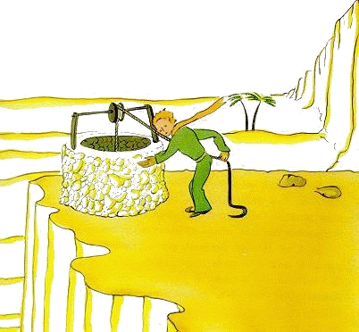

小王子 The Little Prince
第24章
第24章
这是我降落在沙漠后的第八天，我听着这个商人的故事，喝完了最后一滴备用水。
“喔！”我对小王子说，“你的回忆很动人，可是我飞机还没修好，水也喝完了，要是我能朝泉水走去，那真是有福了！”
“我那狐狸朋友……”他说。
“小家伙，这可不干狐狸的事！”
“为什么？”
“因为我快要渴死了……”
他没明白我的思路，回答我说：
“有朋友真好，即使就要死了，我也还是这么想。我真高兴，有过一个狐狸朋友……”
“他没明白情势有多凶险，”我心想，“他从来不知道饥渴。只要有点阳光，他就足够了……”
然而他注视着我，好像知道我心里在想什么：
“我也渴……我们去找一口井吧……”
我做了个表示厌烦的手势：在一望无垠的沙漠中，漫无目标地去找井，简直是荒唐。然而，我们到底还是上路了。
默默地走了几个钟头以后，夜幕降临了，星星在天空中闪烁起来。由于渴得厉害，我有点发烧，望着天上的星星，仿佛在梦中。小王子的话在脑海里盘旋舞蹈。
“你也渴？”我问。
他没有回答我的问题，只对我说：
“水对心灵也有好处……”
我没听懂他的话，但我没作声……我知道，这会儿不该去问他。
他累了。他坐了下来。我坐在他身旁。沉默了一会儿，他又说：
“星星很美，因为有一朵看不见的花儿……”
我说了声“可不是”，就静静地注视着月光下沙漠的褶皱。
“沙漠很美，”他又说。
没错。我一向喜欢沙漠。我们坐在一个沙丘上。什么也看不见。什么也听不见。然而有什么东西在寂静中发出光芒……
“沙漠这么美，”小王子说，“是因为有个地方藏着一口井……”
我非常吃惊，突然间明白了沙漠发光的奥秘。我小时候住在一座老宅里，传说宅子里埋着宝藏。当然，从来没人发现过这宝藏，或许根本没人寻找过它。但是它使整座宅子变得令人着迷。我的宅子在心灵深处藏着一个秘密……
“对，”我对小王子说，“不管是宅子，还是星星或沙漠，使它们变美的东西，都是看不见的！”
“我很高兴，”他说，“你和狐狸的看法一样了。”
看小王子睡着了，我把他抱起来，重新上路。我很激动。我觉得就像捧着一件易碎的宝贝。我甚至觉得在地球上，再没有更娇弱的东西了。我在月光下看着他苍白的前额，紧闭的眼睛，还有那随风飘动的发绺，在心里对自己说：“我所看到的只是外貌。最重要的东西是看不见的……”
当他微微张开的嘴唇绽出一丝笑意时，我又对自己说：“在这个熟睡的小王子身上，最让我感动的，是他对一朵花儿的忠贞，这朵玫瑰的影像，即使在他睡着时，仍然在他身上发出光芒，就像一盏灯的火焰一样……”这时我把他想得更加娇弱了。应该好好保护灯火呵，一阵风就会吹灭它……
就这样走啊走啊，我在拂晓时发现了水井。